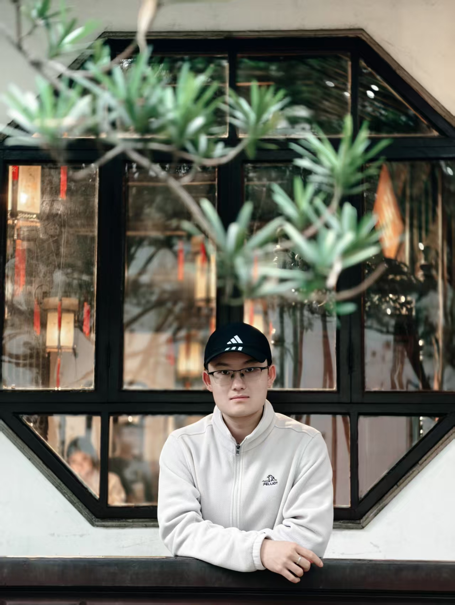

1IEEE TGRS · SCI Q1
Ph.D. Student · Beijing Institute of Technology
Weicheng Gao
Weicheng Gao is a Ph.D. student at the School of Information and Electronics / Radar Research Institute, Beijing Institute of Technology. His research interests include mathematical theory for signal processing and through-the-wall radar human activity recognition.
高炜程，北京理工大学信息与电子学院 / 雷达技术研究院博士生，主要研究方向为信号处理数学理论、穿墙雷达人体行为识别。
BITRadar Research Institute
20+listed papers & outputs
13GitHub repositories
2026latest update

About Me
Research with physics, signal processing, and radar systems.
Education Experience · 教育经历
2018.09–2022.06 · Beijing Institute of Technology
B.S., Xu Teli Class of Excellence / 徐特立英才班，本科
2022.09–Present · Beijing Institute of Technology
Ph.D. Student, School of Information and Electronics, Radar Research Institute / 信息与电子学院，雷达技术研究院，博士
Mentor Profile · 导师简介
Xiaopeng Yang is a professor and doctoral supervisor at Beijing Institute of Technology, a Fellow of the Chinese Institute of Electronics, an IEEE Senior Member, and an IET Fellow. He leads the Ministry of Education Innovation Team for “New-Concept Radar and Real-Time Information Processing” and works on radar intelligent signal processing, deep-learning-based target recognition, and penetrating radar systems.
杨小鹏：北京理工大学教授、博士生导师、中国电子学会会士、IEEE高级会员、IET高级会士，北京理工大学教育部“新体制雷达与实时信息处理”创新团队带头人。主要研究方向包括雷达智能信号处理、深度学习智能目标识别、穿透雷达系统等。
Academic Positions · 学术任职
Secretary of the Radar Technology Institute; deputy director of a national discipline innovation and talent-introduction base; director of the Intelligent Connected Vehicle and Smart Transportation Center at BIT Yangtze Delta Region Academy.
任雷达技术研究所书记、国家级学科创新引智基地副主任、北理工长三角研究院智能网联与智慧交通中心主任。
Research & Projects · 科研方向
Long-term research in radar signal processing and radar systems; recent work covers radar clutter suppression, new-concept radar, penetrating radar, and AI-enabled radar perception.
长期从事雷达信号处理与雷达系统研究，近年研究涵盖雷达杂波抑制、新体制雷达、穿透雷达与智能雷达感知。
Outputs · 科研成果
More than 20 major projects in recent years, 150+ SCI/EI papers, 15 authorized invention patents, and 10 additional patent applications.
近五年承担国家863计划、自然科学基金等项目20余项，发表SCI/EI论文150余篇，授权国家发明专利15项、受理10项。
Professional Service · 学术服务
Service on IEEE radar and aerospace-electronic-systems committees; guest editing for IEEE signal-processing topics; chairing or organizing IET Radar, IEEE ICSIDP, and related conferences.
担任IEEE雷达系统、AESS相关委员会成员，IEEE信号处理特刊客座编辑，并担任IET Radar、IEEE ICSIDP等国际会议主席或程序委员会主席。
Honors · 荣誉奖励
Associated with national technical invention awards and society-level honors for radar-system and signal-processing contributions.
曾获国家技术发明奖一等奖、二等奖、三等奖等奖项，并获中国电子学会优秀科技工作者、雷达分会优秀委员等荣誉。
Student Mentoring · 学生培养
Students have received national scholarships, excellent theses, excellent graduate honors, IET student awards, and best-paper awards at IEEE/IET conferences.
指导学生获国家奖学金、优秀论文/毕业设计、优秀毕业生、IET优秀学生奖，以及IEEE/IET等国际会议优秀论文奖。
Publications
Selected published papers and research explorations.
Published / Accepted Papers · 发表/录用论文
2IEEE TGRS · SCI Q1
3IEEE IoTJ · SCI Q1
4IEEE TMTT · SCI Q1
5IEEE TAES · SCI Q1
6IEEE SPL · SCI Q2
7IEEE SPL · SCI Q2
8IEEE SPL · SCI Q2
9APSIPA ASC · EI
Indoor Human Motion Recognition Method Based on Kernel-Distance Doppler Velocity Estimation and Lightweight Network
10IEEE MAPE · EI
Triple-Link Fusion Decision Method for Through-the-Wall Radar Human Motion Recognition
11IEEE ICSIDP · EI
12雷达学报 · EI
13计算机工程与应用 · EI
多链路全连接条件随机场的穿墙雷达人体行为识别方法
14IEEE TAES · SCI Q1
Azimuth Sidelobe Suppression Method for Through-the-Wall Radar Based on Phase Nonuniform Quantized Coherence Factor
15IEEE IoTJ · SCI Q1
Robust and Lightweight 3D Reconstruction of Buried Threats Using Multi-view GPR Data
16IEEE IoTJ · SCI Q1
Multipath Ghost Recognition and Suppression Method Based on Template Matching for Indoor Human Detection and Location
17IEEE SPL · SCI Q2
Through-the-Wall Radar Imaging Grating-Lobe and Sidelobe Suppression Method Based on Imaginary Sign Coherence Factor
18IEEE ICSIDP · EI
A Through-the-Wall Radar Azimuth Sidelobe Suppression Based on Multibit Coherence Factor
19IEEE ICSIDP · EI
Human Activity Micro-Doppler Corner Feature Representation Method Based on Dual-Threshold Harris Extractor for Through-the-Wall Radar
20雷达学报 · EI
探地雷达多阶段级联 U-Net 墙内小目标三维重建方法
Research in Interest · 兴趣研究 / 预印本
P1arXiv
P2arXiv
P3arXiv
P4arXiv
P5arXiv
Open Source
Code, simulators, and reproducible radar tools.
RadHARSimulator V1
Model-based FMCW radar HAR simulator with RTM/DTM generation and end-to-end processing.
RadHARSimulator V2
Video-to-Doppler generator linking computer vision pose estimation with radar echo simulation.
TWR HAR Without NN
Interpretable through-the-wall radar HAR pipeline built without neural network training.
MIMO μD Augmentation
Multi-channel information fusion for MIMO TWR micro-Doppler signature augmentation.
Heterogeneous Transfer
Limited-data MIMO micro-Doppler representation via heterogeneous transfer learning.
μD in Orders
Chebyshev-time representation for compact and physically meaningful micro-Doppler features.
Academic Activities
Talks, forums, and community engagement.
Invited Talks & Forums · 特邀报告与论坛
Invited Talk, Radar Perception Forum, “New Youth in Autonomous Driving” Lecture Series by Zhidx.com, 2024.
2024年智东西“自动驾驶新青年讲座”雷达感知论坛，作特邀报告。
Doctoral Forum on “Multi-source Information Sensing,” Chinese Institute of Electronics, 2024 — Best Report Award.
2024年中国电子学会“多源信息感知”博士生论坛，作分会场报告，获最佳报告奖。
IEEE ICSIDP, 2024 — Best Paper Award.
2024年 IEEE ICSIDP 国际会议，作分会场报告，获最佳论文奖。
The 5th Doctoral Forum of Journal of Radars, 2025 — Best Report Award.
2025年雷达学报第五届博士论坛，作分会场报告，获最佳报告奖。
Xu Teli Academic Forum, Beijing Institute of Technology, 2023 — Best Paper Award.
2023年北理工徐特立学术论坛，作分会场报告，获最佳论文奖。
The 4th Doctoral Forum of Journal of Radars, 2024 — Excellent Report Award.
2024年雷达学报第四届博士论坛，作分会场报告，获优秀报告奖。
APSIPA ASC, 2022; IEEE MAPE, 2022; Xu Teli Academic Forum, 2022.
2022年 APSIPA、IEEE MAPE 及北理工徐特立学术论坛分会场报告。
Cooperation & Community · 合作报告与社区服务
Founder, “Signal, Machine Learning, and Radar” Column on Zhihu Technology; awarded Haiyan Project High-Quality Creator.
知乎科技领域《信号，机器学习与雷达》系列专栏创始人，获“海盐计划”优质创作者称号。
Assisted mentor with keynote/invited talks at IET International Radar Conference 2023 and 2025.
协助导师在 2023 年 IET 国际雷达会议作大会报告、2025 年 IET 国际雷达会议作特邀报告。
Assisted mentor with invited talks at IEEE ICSP/ICICSP 2023, Radar Future Conference 2024, Electromagnetic Spectrum Conference 2024, and China Electronic Information Conference 2025.
协助导师在 IEEE ICICSP、雷达未来大会、电磁频谱大会、电子信息年会等会议作特邀报告。
Awards & Titles
Honors, service, and student mentoring.
NSFC Young Student Basic Research Program
国家自然科学基金青年博士基础研究项目获得者。
China Radar Industry Association
2023年度技术发明一等奖（序6）。
IEEE Young Professionals
Selected member of IEEE Young Professionals.
CAST Program of Excellence
入选中国科协科技创新后备人才培养计划。
Share Cup · National Second Prize
2022年第九届共享杯科创竞赛全国二等奖（序1）。
Excellent Undergraduate Thesis of Beijing
2022年北京市优秀本科毕业设计。
F5000 Top Articles
2025中国精品科技期刊顶尖论文 F5000 奖（学生序1）。
Journal of Radars Annual Excellent Paper
2024年雷达学报年度优秀论文奖（学生序1）。
Reviewer Service
Reviewer for IEEE AESM, TGRS, IoTJ, TIM, TMTT and other SCI journals; 40+ reviews completed.
Best / Excellent Reports
中国电子学会博士生论坛、雷达学报博士论坛等最佳/优秀报告奖。
BIT Hump Pilot Program
入选北京理工大学“驼峰领航”拔尖创新人才培育计划。
National Scholarship
2025年博士研究生国家奖学金；2022/2023年博士生特等奖学金。
BIT Honors
优秀学生、优秀毕业生、优秀德育答辩奖、优秀团员等。
Century Cup
2021年北京理工大学“世纪杯”科创竞赛一等奖（序1）。
Radar Club & Peer Mentor
北京理工大学雷达俱乐部副部长、学生顾问；2020级物理强基班朋辈导师。
Undergraduate Innovation Program
作为大创指导研究生，指导学生团队获 IEEE ICSIDP Best Paper、“启研”计划、特立学生科技创新团队等。
Contact
Profiles and contact information.
Let us connect
Academic collaboration, radar research, and open-source communication.
I welcome discussions on radar signal processing, through-the-wall sensing, radar-based human activity recognition, and reproducible research tools.
欢迎围绕雷达信号处理、穿墙感知、雷达人体行为识别和可复现科研工具等方向交流合作。
Address: Building 10, Information Science Experimental Building, Beijing Institute of Technology, 5 Zhongguancun South Street, Haidian District, Beijing. 北京市海淀区中关村南大街5号北京理工大学10号信息科学实验楼。
Email: JoeyBG@126.com
WeChat: JoeyBG_Official
QQ: 1416367031
Tel: +86-17801204600